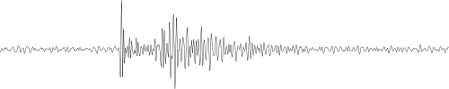
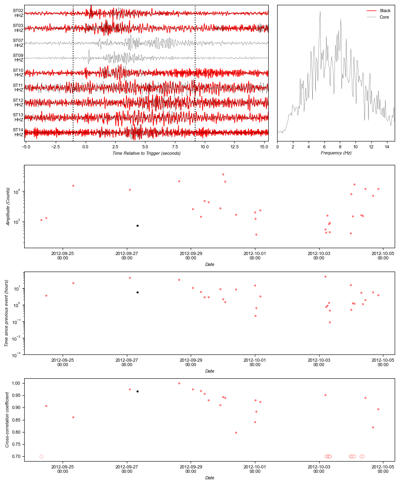

< Cluster 1 |
Cluster 2

Number of events: 33
Longevity: 10.51 days
Mean event spacing: 7.88 hours
Median event spacing: 3.03 hours
Mean Frequency Index: 0.56
First event: 2012-09-24T07:55:00.480000
Core event: 2012-09-29T13:03:42.690000
Last event: 2012-10-04T20:09:31.780000
